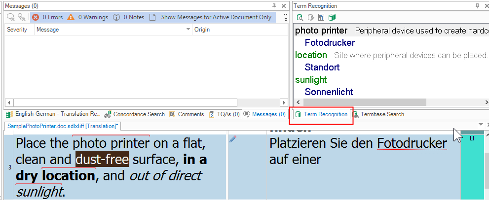
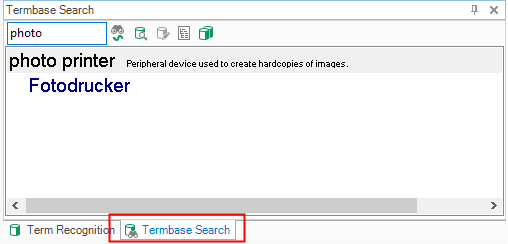
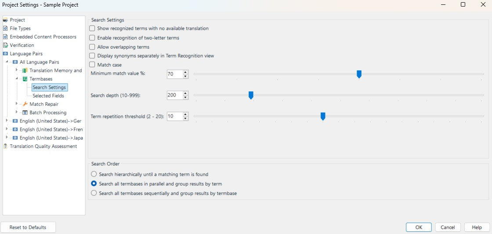

Searching Terms
Searching the terminology source is a critical part of your term provider implementation. Editing can be optional, but term look-up and recognition are essential.
Searching and recognizing terms
- Click inside a segment in Trados Studio. The segment is scanned for terminology from the term resource. Recognized terms are highlighted with a red line and shown in the Term Recognition window:

- You can also manually look up terms in the Termbase Search window:

Implementing the search functionality
Open the MyTerminologyProvider.cs class and go to the Search() function (implemented by the AbstractTerminologyProvider interface). This function is called when you click inside a segment or launch a search in the Termbase Search window. Trados Studio passes several useful parameters:
- text: the search string. When the user selects a segment in Trados Studio, this is the source segment text. When you launch a manual search, this is the search string entered by the user.
- maxResultsCount: the maximum number of hits to show (search depth).
- mode: the search mode, either fuzzy or normal. When selecting a segment in Trados Studio, the default mode is
fuzzy. For manual lookup, the default mode isnormalunless the Fuzzy Search button is selected in Termbase Search. - targetRequired: a Boolean parameter that determines whether source terms without a target term should be shown. This parameter is controlled through the Trados Studio UI.
Below is the Trados Studio UI page where users can determine search depth and whether to display entries without a target term:

The Search() function returns a list of results to display in Trados Studio. In this simplified implementation, we loop through a glossary text file and look for matching source terms:
- In
normalmode, check for source terms that start with the search string. - In
fuzzymode, check for source terms contained in the search string (for example, in the segment text).
A production implementation can use more advanced fuzzy search logic than StartsWith() or Contains(). For each search result object, set the following properties:
- Text: the source term. This is also the term highlighted with a red line in Trados Studio.
- Score: the fuzzy score. In this simplified implementation, set it to 100%. With custom fuzzy logic, you can assign other values.
- Id: the ID of the entry associated with the search result. In Trados Studio, you do not output the search result list directly; instead, you output entries constructed in a separate function (see below). Search result objects are linked to entries through this unique ID. This is why each glossary line in this sample is preceded by a unique number.
The Search() function in our implementation would look like this:
//Is executed when the user launches a lookup operation in the Termbase Search window,
//or when the user moves to a segment in the Editor of Studio. Moving to a segment
//automatically launches a fuzzy search to retrieve any known terminology.
public IList<SearchResult> Search(string text, ILanguage source, ILanguage destination, int maxResultsCount, SearchMode mode, bool targetRequired)
{
string[] chunks;
List<string> hits = new List<string>();
// open the glossary text file
using (StreamReader glossary = new StreamReader(fileName.Replace("file:///", "")))
{
// skip the first line, as it contains only the language settings
glossary.ReadLine();
while (!glossary.EndOfStream)
{
string thisLine = glossary.ReadLine();
if (thisLine.Trim() == "")
continue;
chunks = thisLine.Split(';');
string sourceTerm = chunks[1].ToLower();
// normal search (triggered from the Termbase Search window)
if (mode.ToString() == "Normal" && sourceTerm.StartsWith(text.ToLower()))
hits.Add(thisLine);
// fuzzy search (corresponds to the Terminology Eecognition)
if (mode.ToString() == "Fuzzy" && text.ToLower().Contains(sourceTerm))
hits.Add(thisLine);
}
}
// Create search results object (hitlist)
var results = new List<SearchResult>();
for (int i = 0; i < hits.Count; i++)
{
chunks = hits[i].Split(';');
// We create the search result object based on the source term
// found in the glossary, we assign the id, which associates the search
// result to the correspoinding entry, and we assume that the search score
// is always 100%.
SearchResult result = new SearchResult
{
Text = chunks[1], // source term
Score = 100,
Id = Convert.ToInt32(chunks[0]) // entry id
};
// Construct the entry object for the current search result
_entry.Add(CreateEntry(chunks[0], chunks[1], chunks[2], chunks[3], destination.Name));
results.Add(result);
}
return results;
}
As noted above, the results list needs to be associated with the corresponding entry, which you construct in the following helper function:
// This helper function is used to construct the entry content with entry id, source and target term, and
// definition (if applicable)
private Entry CreateEntry(string id, string sourceTerm, string targetTerm, string definitionText, string targetLanguage)
{
// Assign the entry id
Entry thisEntry = new Entry
{
Id = Convert.ToInt32(id)
};
// Add the target language
EntryLanguage trgLanguage = new EntryLanguage
{
Name = targetLanguage
};
// Create the target term
EntryTerm _term = new EntryTerm
{
Value = targetTerm
};
trgLanguage.Terms.Add(_term);
thisEntry.Languages.Add(trgLanguage);
// Also add the definition (if available)
if (definitionText != "")
{
EntryField _definition = new EntryField
{
Name = "Definition",
Value = definitionText
};
thisEntry.Fields.Add(_definition);
}
return thisEntry;
}
Add the following entry list object to the terminology provider class:
private List<Entry> _entry = new List<Entry>();
Besides the Search() method, the term provider interface also calls the GetEntry() method, which outputs the corresponding entry based on the ID parameter:
// Returns the entry for a search result. The entries are associated with the search results
// through the entry id.
public Entry GetEntry(int id)
{
return _entry.FirstOrDefault(_entry => _entry.Id == id);
}